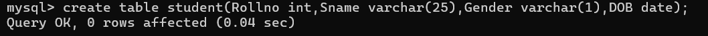

CREATE
Create Table
This command is used to create table in a database.
Syntax :
create table table_name(column1 datatype, column2 datatype, ....);

Create Database
This command is used to create new database.
Syntax :
create database database_name;

Show Database
This command is used to display all databases present in the server.
Syntax :
show databases;

Show Table
This command is used to display all tables present in the selected database.
Syntax :
show tables;

USE
This command is used to select which database you want to work with.
Syntax :
use database_name;

DESCRIBE
This command is used to describe the structure of a table.
Syntax :
describe table_name;

INSERT
The insert statement is used to add records in a table.
To insert data for all the columns into a table.
Syntax :
insert into table_name values (value1, value2, ...);

To insert data only for some specific columns into a table.
Syntax :
insert into table_name(col1, col2) values(val1, val2, ...);

DROP
This command is used to permanently delete a table or a database.
To drop an entire table.
Syntax :
drop table table_name;

To drop a database.
Syntax:
drop database database_name;

ALTER
This command is used to make changes in the structure of an existing table. This command is used to add, drop and
modify the column of an
existing table.
To add a new column into existing table.
Syntax:
alter table table_name add column_name datatype;

To delete an existing column from table.
Syntax:
alter table table_name drop column column_name;
To modify the data type of a column.
Syntax:
alter table table_name modify column_name new_datatype;